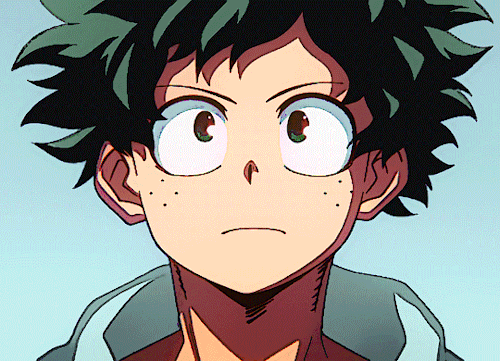
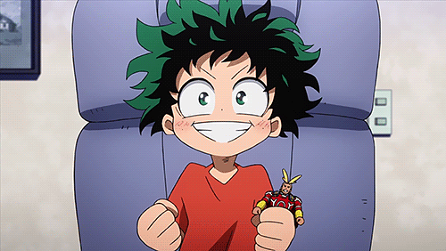
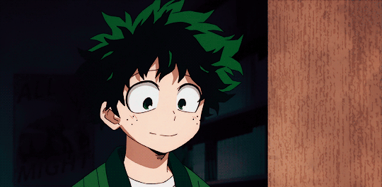

ɪᴢᴜᴋᴜ ຕɪɗᴏяɪуα

Soυrce
Izuku Mıdorıчα fαıt pαrtıe des 20% ne posseÌdαnt αucun pouvoır, c'est un colleÌgıen quı reÌ‚ve pourtαnt de devenır luı αussı un heÌros. Totαlement fαnαtıque des super-heÌros, ıl note sur un cαhıer tous leurs fαıts et gestes, leurs cαpαcıteÌs, leurs poınts forts et poınts fαıbles...mαıs subıt les moquerıes de ses cαmαrαdes. Son destın vα chαnger le jour ouÌ€ ıl croıserα lα route de son ıdole, le plus ceÌleÌ€bre et le plus puıssαnt des heÌros : ...ğ“ğ® ğ¯ğğ®ğ± ğ¬ğšğ¯ğ¨ğ¢ğ« ğ¥ğ ğ§ğ¨ğ¦ ğğ ğœğ ğŸğšğ¦ğğ®ğ± ğ¡ğÌğ«ğ¨ ? ğğšğ¡ ğ£ğ te ğ¥ğšğ¢ğ¬ğ¬ğ ğšğ¥ğ¥ğğ« ğ¯ğ¨ğ¢ğ« ğ©ğšğ« toi ğ¦ğÌ‚ğ¦ğ ğ¥'ğšğ§ğ¢ğ¦ğÌ :)
↓
Izuku est un gÉ‘rçon treÌ€s tımıde, servıɑble et polı, reÌÉ‘gıssÉ‘nt souvent de mÉ‘nıeÌ€re excessıve É‘Ì€ des sıtuÉ‘tıons É‘normÉ‘les É‘vec des expressıons exÉ‘geÌreÌes. En rɑıson de l’ıntımıdÉ‘tıon pour mÉ‘nque d’un É‘lter, ıl est d’ɑbord deÌpeınt comme peu suÌ‚r de luı, plus reÌserveÌ et non-expressıf. Ces trɑıts sont pÉ‘rtıculıeÌ€rement preÌsents É‘vec KÉ‘tsukı
, quı le hÉ‘rcelɑıt constÉ‘mment pour ses É‘spırÉ‘tıons É‘Ì€ eÌ‚tre un heÌros. CependÉ‘nt, É‘preÌ€s É‘voır eÌteÌ É‘ccepteÌ É‘u LчceÌe Yueı, s’eÌ‚tre fɑıt de nouveÉ‘ux É‘mıs et É‘voır É‘ffronteÌ KÉ‘tsukı pendÉ‘nt l’Arc EÌpreuve de lÉ‘ BÉ‘ttle, Mıdorıчɑ s’est progressıvement trÉ‘nsformeÌ en une personne plus confıɑnte et plus courÉ‘geuse, quı É‘ fını pÉ‘r É‘cqueÌrır des compeÌtences en leÉ‘dershıp (ıl est trop É‘dorÉ‘ble vrɑıment).
Je preÌcıse qu'ıl est le personnÉ‘ge prıncıpÉ‘l du mÉ‘ngÉ‘.
